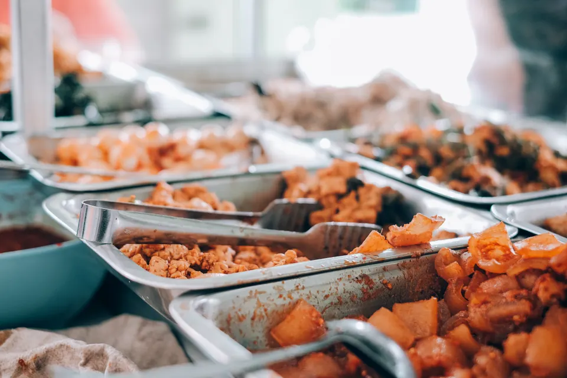
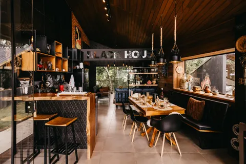
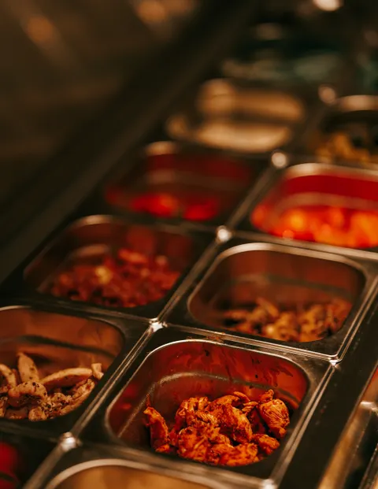
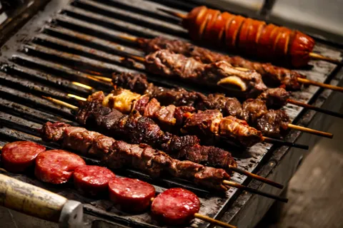
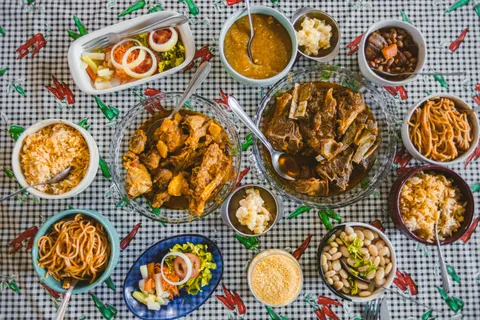

Pratos da casa
- Executivo de fraldinha — R$ 34,90
- Arroz, feijão, farofa e salada.
- Frango grelhado — R$ 27,90
- Arroz, feijão e legumes refogados.
- Prato vegetariano — R$ 25,90
- Arroz integral, feijão, abóbora assada e salada.
Restaurante self-service
Comida caseira, qualidade e variedade todos os dias.
Monte seu prato com receitas brasileiras, saladas frescas e cortes preparados na churrasqueira.
Diversas opções todos os dias
Ingredientes selecionados
Conforto para sua refeição
Equipe atenciosa e dedicada

Nosso buffet
Um buffet completo, com pratos quentes, acompanhamentos, saladas e carnes preparadas com tempero caseiro.
Buffet por quilo: R$ 69,90/kg
Buffet com churrasco: R$ 89,90/kg
Algumas sugestões para o seu almoço. Os pratos do buffet podem variar diariamente.
Restaurante fictício. Todos os preços são ilustrativos.
Galeria




11h às 15h
11h às 16h